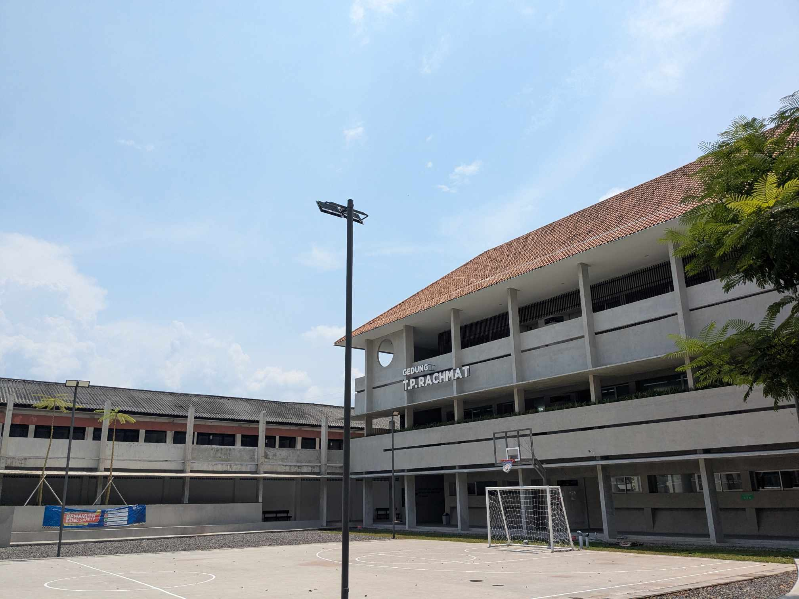

Fakultas Sains dan Teknologi Universitas Pignatelli Triputra (FST Upitra) merupakan fakultas baru yang didirikan pada proses alih bentuk atau penggabungan dari STIE Pignatelli Surakarta dan ABA Pignatelli Surakarta, berdasarkan SK Nomor 3884/E1/HK.03.00/2022 kedua perguruan tinggi tersebut telah berubah bentuk menjadi Universitas Pignatelli Triputra.
SelengkapnyaProgram studi yang unggul dalam bidang sistem informasi, berorientasi global, menjunjung tinggi nilai-nilai integritas dan bersemangat kebhinekaan.
SelengkapnyaProgram studi yang unggul dalam bidang informatika, berorientasi global, menjunjung tinggi nilai-nilai integritas dan bersemangat kebhinekaan.
SelengkapnyaProgram studi yang unggul dalam bidang rekayasa perangkat lunak, berorientasi global, menjunjung tinggi nilai-nilai integritas dan bersemangat kebhinekaan.
Selengkapnya